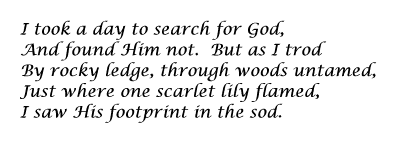
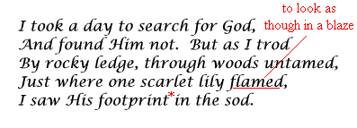

Below is a summary of all the information presented in this guide. If you wish to have a hard copy of the Guide to Poetry Analysis, ask your supervisor for permission to print this page.
Introduction
Often better described as an enigma than a form of literature, poetry is, as Isaac Barrow once said, "a kind of ingenious nonsense." Poems are so ambiguous that even, at times, the responsible poets aren't certain how to interpret their creations, as French symbolist Paul Valéry suggests by saying "My poems mean what people take them to mean." Poetry means different things to different people, but to some it may mean nothing at all. Part of what makes poetry so entertaining is precisely this challenge of unlocking the poet's mind and solving the mystery. To do this may require time and effort, depending on the poem. Readers are much more likely to understand if they closely examine, or analyse, difficult poetry.
Poetry analysis is a necessary skill in the English language. The following guide will take you step-by-step through the process of analysing a poem.
Step 1: Background
This guide uses Bliss Carman's "Vestigia" as an example. If at all possible, it is recommended that you research background information before so much as reading the poem. Every tidbit of information from the poet's style to the era of the work's publication can be useful during an analysis. Any biography of Bliss Carman (1861-1929) should reveal that he was a reputable Canadian poet of the turn of the century. His verse is melodious, suggestive, and visually imagistic. Carman's most popular collection of poetry is Songs from Vagabondia (1894). After having done research, you should now be more aware of the context of the work (which in this case was provided to you) and therefore more qualified to analyse it.
Step 2: First Reading for General Content
To analyse a poem, it is a good habit to read it several times. If the poem is short to medium in length, you are recommended to read it at least three times, aloud if possible. During the first reading, which you are about to do, focus only on the general content of the poem. This includes identifying the speaker, audience, setting, characters (if any), as well as the plot or action.

After reading through the poem for the first time, briefly paraphrase what you have read.
Step 3: Second Reading for Unfamiliar Terms
During this, the second reading, keep a dictionary nearby and look up any unfamiliar terms. Also be on the look-out for any allusions, symbolism, or connotations. If any are found, be sure to make note of them, as has been done here.

Step 4: Third Reading and Full Analysis
Now that you understand the poem at least superficially, it is time for very fine analysis. An easy way to remember the major elements of poetry analysis is the FRIDS formula, which is elaborated below:
| Form and structure |
type of poem, line and stanza length,
punctuation, capitalization |
| Rhyme and rhythm |
metre, feet/line; if not free verse: rhyme scheme, end/internal rhyme, visual/slant rhyme |
Imagery and
figurative language |
imagery, simile, metaphor, apostrophe, metonymy, synecdoche, personification, oxymoron, paradox |
| Diction |
unusual words, effectiveness, ambiguity, onomatopoeia, repetition |
Sound devices
and special features |
alliteration, consonance, assonance,
cacophony, euphony, pun |

Step 5: Mood, Tone, and Theme
Finally, having analysed the poem in detail, discuss the mood, tone, and, most importantly, the theme. Does the poem use satire? Is it allegorical?
Note, however, that for longer narrative poems time restraints may not permit three full readings of the work. In special situations such as those, these guidelines would have to be modified.
Step 6: Writing the Analysis
This final step is where all your previous work is collected and put into presentable format. An analysis of poetry has the same basic structure as an essay: an introductory paragraph, three or more supporting paragraphs, and a conclusion.
The introductory paragraph should include both the title of the poem and the poet's name in addition to making an insightful thesis statement about the main theme to catch the reader's attention.
The main body of the analysis should contain a number of things. The content of the poem, both the theme and literary techniques, should be discussed in some logical and clear order with a paragraph devoted for each "thought group". These thought groups may be single stanzas, several stanzas, or mere couplets depending on the poem under analysis. Be sure to mention all elements of the FRIDS formula you noted in the previous steps of this guide. Also, give plenty of examples and direct quotes when appropriate. Be sure to incorporate your arsenal of literary terms whenever possible to sound more credible. For example, instead of "the poem tells a funny story", say "this narrative poem contains traces of humour."
An effective conclusion to a poetry analysis restates the theme of the poem, with more insight if possible, and refers to any dominant characteristics (e.g. imagistic, melodious, satirical, etc.). Don't forget that presentation is everything--type it up or use your best penmanship and never forget to include a proper title page.